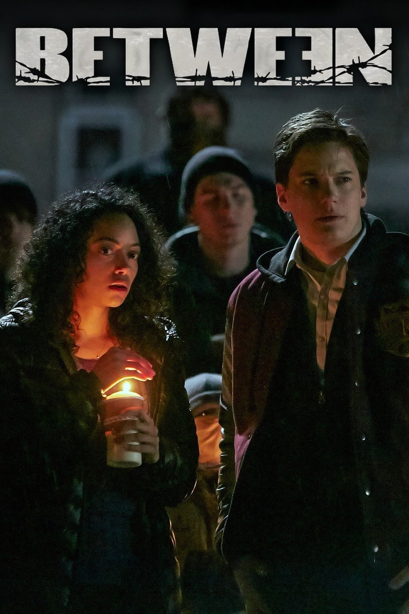
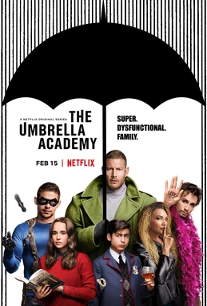
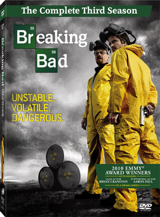

Favorite Sci-fi Series
Dark

Dark is a German science fiction thriller television series co-created by Baran bo Odar and Jantje Friese.[5][6][7] It ran for three seasons from 2017 to 2020. The story follows characters from the fictional town of Winden, Germany, as they pursue the truth in the aftermath of a child's disappearance. They follow connections between four estranged families to unravel a sinister time travel conspiracy that spans several generations. The series explores the existential implications of time and its effect on human nature and life. It features an ensemble cast. Dark debuted on 1 December 2017 on Netflix; it is the service's first German-language original series. The second season was released on 21 June 2019,[8][9] while the third and final season was released on 27 June 2020.[10][11] Dark was praised for its cast, direction, writing, tone, visuals, musical score, and the ambition and complexity of its narrative. In 2021, the BBC ranked the series as the 58th greatest TV series of the 21st century.[12]
Between
Between is a Canadian science fiction drama television series which debuted on Citytv on May 21, 2015. Created by Michael McGowan, the series stars Jennette McCurdy as Wiley Day, a pregnant teenage daughter of a minister living in the small town of Pretty Lake, which is coping with a mysterious disease that has killed everybody over the age of 21.[1] The series is a co-production between Citytv and Netflix, which distributes the series outside Canada as a Netflix Original Series.[1][2] The series was renewed for a second season on July 8, 2015, which premiered on June 30, 2016.[3] Though the series was never officially cancelled, no news has been released about the series since the last episode of the second season aired on August 4, 2016.
Stranger Things

Stranger Things is an American science fiction horror drama television series created by the Duffer Brothers for Netflix. Produced by Monkey Massacre Productions and 21 Laps Entertainment, the first season was released on Netflix on July 15, 2016. The second and third season followed in October 2017 and July 2019 respectively, and the fourth season aired in two parts in May and July 2022. In February 2022, Stranger Things was renewed for a fifth and final season. Set in the 1980s, the series centers around the residents of the fictional small town of Hawkins, Indiana, as they are plagued by a hostile alternate dimension known as the Upside Down, after a nearby human experimentation facility opens a gateway between Earth and the Upside Down. The ensemble cast includes Winona Ryder, David Harbour, Finn Wolfhard, Millie Bobby Brown, Gaten Matarazzo, Caleb McLaughlin, Natalia Dyer, Charlie Heaton, Cara Buono, Matthew Modine, Noah Schnapp, Sadie Sink, Joe Keery, Dacre Montgomery, Sean Astin, Paul Reiser, Maya Hawke, Priah Ferguson and Brett Gelman.
The Umbrella Academy
The Umbrella Academy is an American superhero television series based on the comic book series of the same name written by Gerard Way, illustrated by Gabriel Bá, and published by Dark Horse Comics. Created for Netflix by Steve Blackman and developed by Jeremy Slater, it revolves around a dysfunctional family of adopted sibling superheroes who reunite to solve the mystery of their father's death and the threat of an imminent apocalypse. The series is produced by Borderline Entertainment (season 1–2), Irish Cowboy (season 3), Dark Horse Entertainment, and Universal Content Productions. Netflix gave seasons 1 and 2 a TV-14 rating, while season 3 received a TV-MA rating.
Breaking Bad
Breaking Bad is an American crime drama television series created and produced by Vince Gilligan for AMC. Set and filmed in Albuquerque, New Mexico, the series follows Walter White (Bryan Cranston), an underpaid, dispirited high-school chemistry teacher struggling with a recent diagnosis of stage-three lung cancer. White turns to a life of crime and partners with a former student, Jesse Pinkman (Aaron Paul), to produce and distribute methamphetamine to secure his family's financial future before he dies, while navigating the dangers of the criminal underworld. Breaking Bad premiered on AMC on January 20, 2008, and concluded on September 29, 2013, after five seasons consisting of 62 episodes. Among the show's co-stars are Anna Gunn and RJ Mitte as Walter's wife Skyler and son Walter Jr., and Betsy Brandt and Dean Norris as Skyler's sister Marie Schrader and her husband Hank, a DEA agent. Others include Bob Odenkirk as Walter's and Jesse's lawyer Saul Goodman, Jonathan Banks as private investigator and fixer Mike Ehrmantraut, and Giancarlo Esposito as drug kingpin Gus Fring. The final season introduces Jesse Plemons as the criminally ambitious Todd Alquist, and Laura Fraser as Lydia Rodarte-Quayle, a cunning business executive.